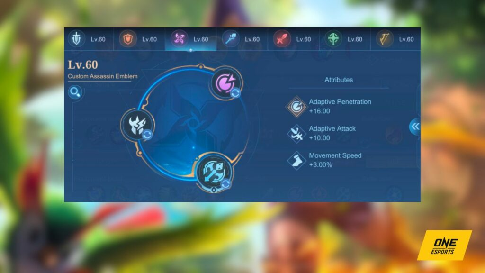

A comprehensive guide on how to play Joy in Mobile Legends
Battle spell recommendation
Credit: One Esports
When playing Joy in the EXP lane or midlane, choosing Vengeance as your battle spell is a smart decision,
especially because she is relatively easy to burst down. Vengeance provides you with the means to stay alive
for a longer duration and inflict damage on foes who target you while you build up your rhythm.
How to know the best type of Retribution for you in Mobile Legends
Retribution is another good battle spell for her since she can be played in the jungle. Upgrade it to Ice
Retribution to get a movement speed debuff to enemy heroes, which works well with her mobility skills. It
can also act as an escape tool whenever you fail to hit your second skill.
Recommended emblem set

Credit: One Esports
Since Joy is an assassin, it’s advisable to select the assassin emblem as it boosts her adaptive penetration,
attack, and movement speed. This helps her excel in her role as an assassin.
For talents, consider choosing Rupture for the enhanced adaptive penetration and Killing Spree for the added
movement speed and HP regeneration upon each kill. These talents increase her chances of survival in team
fights.
Mobile Legends Emblem system guide: All talents and best emblem setup
In the second-tier talent category, opt for Seasoned Hunter if you’re playing as a jungler. This talent lets
her deal good damage to jungle creeps. If you’re playing in the EXP lane or midlane, go for Bargain Hunter,
as it enables you to complete your item build more quickly.
Recommended item build
As an assassin, building offensive items such as Genius Wand and Glowing Wand first is important in the early
parts of the game. Going for Concentrated Energy or Holy Crystal is also a solid choice if you have farmed
enough gold in the first 10 minutes.
DEFENSIVE EQUIPMENT GUIDES
When should you buy Blade Armor over Antique Cuirass in Mobile Legends?
Athena’s Shield or Radiant Armor? Here’s a guide to know when to buy these items
Immortality, Wind of Nature, or Winter Truncheon? Know which survivability item to buy
She tends to fall off in the late game once everyone has a full item build, and is susceptible to getting
one-shotted.
If the game goes past the 20-minute mark, replace some of your magic items with defensive items such as
Winter Truncheon or immortality.
Recommended best build for Joy in Mobile Legends
- Arcane Boots (with Ice retribution)
- Genius Wand
- Holy Crystal
- Concentrated Energy
- Blood Wings
- Divine Glaive
Easy combos to learn
In the laning phase, hide behind a bush and cast your first skill on the enemy whenever they get close.
Once the target is slowed, cast the Meow, Rhythm of Joy! five times before activating your Execute
battle spell.
Once you reach level four, make sure to hit all your second skills to the beat to deal maximum damage
with your ultimate, Ha, Electrifying Beats!
You can also surprise your enemies by placing a Leonin Crystal inside a bush and dashing toward that to
begin the minigame.
Since you’ll have an extra dash upon reaching the crystal, you can dash again, this time toward an enemy
hero. By this time, you’ll only need four more dashes to activate the ultimate, surprising enemies who
have not seen the first dash inside the bush.
You must crank the volume up when playing Joy, as that’s the best way to time your dashes to the rhythm
without having to constantly look at the indicator below the screen.
Follow ONE Esports on Facebook, Instagram, and TikTok for MLBB esports news, guides, and updates.